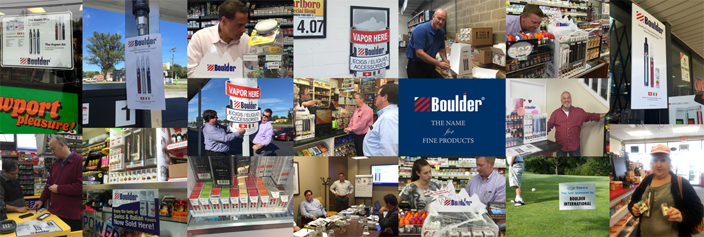

铂 德 国 际
Boulder International, Inc.
铂德是铂德国际有限公司（BOULDER INTERNATIONAL, INC.）旗下电子雾化烟、雾化营养品品牌。铂德（Boulder）于2013年底由罗伯特·海布、罗恩·蒂菲利普、汪泽其三位一起在美国宾夕法尼亚创办。 2014年初罗恩·蒂菲利普退出，剩下两位创始人一直服务铂德至今。铂德在美国、中国两地设有研发中心和营运中心。研发人员占全公司员工的1/3。美籍员工占全公司员工比例的25%。2017年铂德国际总 部迁至新泽西，同年铂德国际授权铂德（深圳）科技有限公司在中国大陆地区生产和销售铂德产品，2019年5月铂德（深圳）在北京设立市场营销中心。
截止2018年12月，铂德产品在美国超过20000家零售店面进行销售。在中国市场，铂德在天猫、京东开设有官方旗舰店，截止2019年6月铂德在北京、上海、广州、深圳、重庆、南京等城市均有运营旗舰店 或专卖店。另外，铂德已经入驻包括美宜佳、上海喜士多、浙江十足等全国知名连锁便利店在内的千家线下门店。
铂德公司长年参与慈善与公益事业，在美国持续参与社区艺术培训公益活动。铂德在印度、尼泊尔等地区资助当地参与社区垃圾回收项目。铂德长期资助中国云贵边远地区的儿童教育。铂德每年资助公益团 队前往西藏边远地区改善医疗、协助建设洁净下水工程，以减少痢疾、降低新生儿死亡率。
